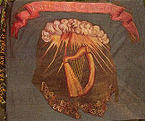
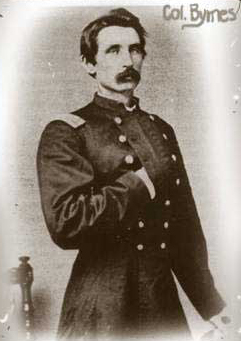
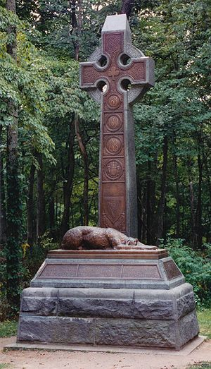
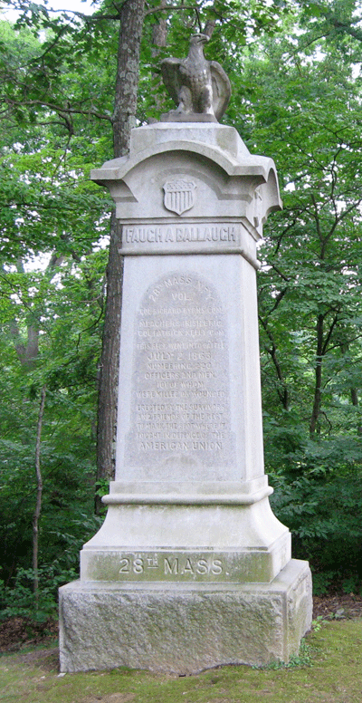

|
During the beginning of the 19th century, the beautiful
country of Ireland that was covered with rolling green
hills, was in the midst of an incredibly destructive potato
famine. Due to the failure of the Irish potato crop, the
Irish suffered from mass starvation and disease. In an
attempt to escape the extreme poverty of Ireland, more than
two million Irishmen sought to leave Ireland and begin a new
life in another country. Many of the Irish were attracted
by the young and prosperous nation of America, a place where
people escaped to fulfill their dreams. As a result of the
increased suffering in Ireland, America experienced a large
influx of Irish immigrants to the shores of New York in the
mid-1800's.
Upon the arrival of the Irish immigrants to America, it did
not take long for the Irish to realize that America was not
as opportunistic as it had seemed. When the Irish first
arrived, most of them were poor, unskilled and illiterate.
As a result, Americans often viewed them as incapable
foreigners who were not determined to establish themselves
in America. Most of the immigrants "found work only at the
bottom of the American economy: the women as millworkers,
servants, and cooks for America's expanding middle class-
the men as unskilled factory laborers, miners, lumbermen,
dockhands, construction workers, ditch-diggers, and builders
of the new nation's roads, streets, canals, and
railroads."
The Civil War provided the Irish immigrants with the perfect
opportunity to prove themselves to the American people. To
be a volunteer soldier in the Civil War was by no means a
simple task. Volunteer soldiers were citizens who
volunteered their lives for many different reasons including
their country, the cause, their family, religion, their
comrades, etc. The volunteers were extremely inexperienced
yet were still expected to perform with the same dedication
as a trained soldier. As states began to advertise for
volunteer regiments, the Irish quickly answered the call to
enlist in the Union army. The Irish believed that by
volunteering their services to fight for America, they could
establish a secure place for themselves in American society.
In addition, their service in the war would provide them
with adequate training that, once the war was over, could be
used to support their homeland in their continuous struggle
against England.
Were the Irish truly fighting a war for two nations? Or
were they using their own country's problems as motivation
to become a respectable citizen in the United States
following the war? Throughout my extended research of the
28th Massachusetts, one of the most renowned Irish regiments
of the famous Irish Brigade, I believe that the Irishmen's
desires to assimilate into American society as well as their
|

Flag of the 28th Massachusetts Infantry
|
loyalty to their homeland provided them with the motivation
necessary to continue fighting throughout the Civil War.
However, at the conclusion of my studies, it became apparent
to me that once the Irish had truly established themselves
in America, they were unwilling to return to their
poverty-stricken nation and assist them in their fight
against England.
In order to support this argument, I have used a number of
sources which include primary sources such as official
documents, letters, and memoirs. I have also used secondary
sources by well-known Civil War historians such as James M.
McPherson, Bell Wiley, and Earl J. Hess to achieve a better
understanding of the Civil War soldier. Throughout my paper
I will be using two particular people of the 28th
Massachusetts to help establish my argument: General Thomas
F. Meagher and Color Sergeant Peter Welsh. General Meagher
played an integral role in the organization of the 28th
Mass. and continued to provide guidance and support to the
members of this regiment as their general when they joined
the Irish Brigade until his resignation from the army in
1863. Peter Welsh was a member of the 28th Mass. from Sept.
1862 until he died from a wound at the battle of
Spotsylvania in June 1864. The letters Peter Welsh wrote
home to his wife and family have provided me with firsthand
insight that depicts the experiences of the 28th Mass. In
addition, his letters allowed me to understand the personal
trials encountered by a member of the 28th Mass.
The history of the 28th Massachusetts Volunteer Infantry is
extremely interesting. Being an Irish American myself, I
was eager to learn more about the struggles encountered by
the Irishmen (who could possibly be my ancestors) both in
society and on the battlefield. These men were a very
special group of soldiers that were known for their courage
on the battlefield as well as their good spirits in camp. It
is my hope that the regimental history of this brave and
dedicated regiment will be as fascinating for you as it was
for me during my research over the past ten weeks.
During the early years of the war, enthusiasm for the war
was still at its peak; impressionable boys and young men
received a romanticized and unrealistic image of the
conflict they were about to become engaged in. "The
excitement, drama, color, and heroism of war were stressed;
its darker aspects were downplayed or overlooked...
Soldiering was an adventure; death in battle was a glorious
sacrifice for country and a good cause."
Due to the overwhelming desire of the Irish immigrants to
successfully integrate into American society, these men were
just as affected by the propaganda of the war. Upon the
return of the 69th Militia, a famous Irish regiment, to New
York, General Meagher began recruiting for an Irish Brigade,
a brigade composed of a number of regiments that were
primarily composed of Irish immigrants. In response to the
overwhelming population of men of Irish birth and heritage
in Massachusetts, Governor John A. Andrew issued a call for
volunteers in May 1861. Gov. Andrew was hoping to build on
the success already established at the battle of Bull Run by
the first Irish regiment, the Massachusetts 9th. Despite
the large number of Irish men already enlisted in other
state regiments, the state of Massachusetts was able recruit
two additional predominantly Irish regiments referred to as
the "Second and Third Irish Regiments." The Second Irish
Regiment, better known as the 28th Massachusetts Volunteer
Infantry, officially began its service for the Union on
December 31, 1861.
During recruitment, Gov. Andrew stated that one of the two
regiments formed would join Meagher and become one of the
honorable regiments of the "Irish Brigade." Naturally, since
the 28th Mass. regiment had been recruited to full strength
quicker than the "Third Irish Regiment," otherwise known as
the 29th Massachusetts Volunteer Infantry, the 28th Mass.
assumed that it would have the honor of being sent to the
"Irish Brigade." Unfortunately, a prominent criminal lawyer
and influential Democratic politician who supported the war,
Maj. Gen. Benjamin Butler, who was also eager to assemble
his forces at this time, influenced Gov. Andrew to assign
the 28th Mass. to his forces and the 29th Mass. to Gen.
Meagher.
During the war, the majority of the Irishmen not only fought
for the common goal of the Union, but they also fought for
the future protection of their true home, Ireland. One
aspect of all the Irish regiments that participated in the
Civil War was their extreme loyalty and honor of their
homeland, the Emerald Isle. The Irishmen saw enlistment as
an opportunity to gain the experience necessary to soon
return to Ireland and aid their fellow brothers in the most
important battle they would ever fight, a battle for the
freedom of their country from England. Both at the beginning
of the war and throughout the remaining four years, the
majority of the Irish soldiers cc enlisted in the hope of
being enabled somehow to strike a blow at England."
According to the well-respected general of the "Irish
Brigade," Meagher believed that "if only one in ten of us
come back when this war is over, the military experience
gained by that one will be of more service in a fight for
Ireland's freedom than would that of the entire ten as they
are now." When the 28th Mass. heard the announcement of
their appointment to Butler's forces, the regiment was very
dissatisfied since it was believed that the Irish Brigade
was going to be the basis of the army that returned to
Ireland .
Another notable reason why the Irish, as well as the
majority of the soldiers who served in the Civil War,
enlisted was the generous amount of bounty they would
receive. This was particularly appealing to the Irish since
most of the men who had immigrated from Ireland were
composed of day laborers who had few, if any, skills. Often
the Irish men were forced to work long hours in harsh
conditions for extremely low wages. In a recruiting
advertisement for the 28th Mass., the men were promised $138
cash at the time of enlistment, $75 at the end of the war,
state aid to families, and pensions to the wounded. Since
the men were often struggling to provide the bare
necessities for their families, joining to fight in the
Civil War seemed to be an incredible opportunity to earn
money for their families and eventually move up in
society.
In addition to the attractive amount of money the men were
offered for enlisting to fight for the Union, they, along
with all the other soldiers in the war, were misled by the
anticipated length of the war. The excitement of adventure
seemed to hide the true realities of war. Since this war was
fought predominantly by the younger men in society, very few
soldiers had experienced the trials of war prior to the
Civil War. Many soldiers relied on the games they played
during childhood as an indication of what they would endure
when they actually engaged in battle. The same
advertisement as was mentioned above indicates the
misconceptions the Union soldiers had prior to setting out
for war. It read: "Christmas next, at latest, will bring c
peace on earth to men of good will in our distracted
country, and men and angels will rejoice at the glorious
destiny which awaits the 'land of the free.' This
advertisement demonstrates that the 28th Mass participated
in the excitement of joining the Union forces because of the
freedom and social acceptance they would be able to indulge
in once the war was over.
The members of the 28th Mass. Volunteer Infantry were
unexceptional in that the vast majority of the men were
inexperienced and undisciplined in the field of being a
soldier. A majority of the men did not have "an accurate
conception of what combat was like." As a result, once the
regiment left camp on January 11, 1862, it was relocated in
New York harbor to receive intense drilling and training
necessary to engage in battle. The ensuing five months
proved to be extremely difficult for the 28th Mass. From
February to April, the regiment spent the majority of its
time embarking in hard labor on the wet, swampy islands in
South Carolina and Georgia. Not only did the marshy land
create dangerous working conditions for the soldiers, who
risked sinking or drowning, but it also provided extremely
unsanitary conditions. Due to the large number of
mosquitoes and rank mud, the soldiers frequently became sick
with malaria and other serious diseases. Prior to the 28th
Mass.'s first significant battle, at least 22 died of
disease, and many others were so stricken by disease they
would be discharged in the upcoming months.
After nearing five months of training and drilling, the 28th
Mass. was anxious to "see the elephant" and to prove its
courage and manliness on the battlefield. Up to this point
in the war, the Confederates had been in control. It was
now becoming apparent to everyone that this war was going to
be a long struggle as opposed to the "quick little war" it
was projected to be in 1861. Even though the regiment
became engaged in fire on June 1 and 2, 1862, on James
Island, it was not until June 16, under the leadership of
Col. Monteith, at the Battle of Seccessionville, that the
28th Mass. was able to engage in battle. The Battle at
Successionville afforded the regiment the opportunity to
"see the elephant" and to prove its courage and manliness to
the Union Army. While attempting to overcome both the enemy
and the swampy conditions in which the 28th Mass. was forced
to fight, the regiment suffered 67 casualties. Regardless
of this high number, 'they were commended for their poise
and bravery under the severe fire they faced from enemy
forces firing behind entrenched positions." According to
McPherson, "once they had seen the elephant, few Civil War
soldiers were eager to see it again." Once the eagerness for
battle wore off, the soldiers relied on other forms of
motivation to enable them to overcome the hardships of the
war. The most prominent source of motivation for the 28th
Mass. was their sincere loyalty to Ireland. The most
|

Col. Richard Byrnes of the 28th Massachusetts Infantry
|
obvious symbol of the 28th Mass. everlasting loyalty to
their homeland, was the green flag that they honorably
marched behind. The regimental flag was extremely important
to each regiment in the army. The flags served as "markers
which would readily identify where the center of the unit
was located by men in the ranks and their regimental
officers ... They were also vital for aides carrying orders
from the brigade commander who was seeking to locate the
position of each of the regiments in a formation." For the
28th Mass. Volunteer Infantry, their flag served an even
greater purpose. Even though the green flag was a symbol for
the Union cause, it held much more meaning to the soldiers
who marched behind it. For the Irish soldiers, 'the sight of
the green flag of old Erin, with the harp and sunburst
emblazoned on it, had an almost electrical effect, adding
fresh vigor to the courage of many an Irish regiment on the
battlefield. Here was 'the nostalgia of the exile for his
native land." This flag motivated them to march forward
through intense fighting and strive for the freedom that
would greet them at the conclusion of this terrible
conflict.
The green flag was not the only motivation the 28th Mass.
had to continue during the war. An important driving force
behind the soldiers of the Civil War to remain fighting
through thick and thin was their determination to prove
their manliness and not to be labeled as a coward.
Many soldiers lacked confidence in their courage. But most
of them wanted to avoid the shame of being known as a
coward-and that is what gave them courage. Civil War
soldiers went forward with their comrades into a hail of
bullets because they were more afraid of 'showing the white
feather' than they were of death. The soldier who visibly
skulked out of combat could never hold up his head again as
a man among men.
This proved to be particularly important to the Irish
soldiers fighting in the war. In addition to proving their
manliness, they were also fighting to "help assuage the
resentment of Americans at the hesitation of the part of the
foreign-born to enlist." The bitterness the Irishmen
received from their American brothers motivated them to
prove that they were capable of bearing the responsibilities
associated with being an American citizen. The Civil War
provided these men with the opportunity to make something of
themselves under the critical eye of the American public.
In addition to the regiment suffering the losses of a great
number of men to disease and to enemy fire during the early
years of the war, it also suffered from internal dissention
and a lack of stable leadership. Strong leadership was an
essential aspect of each fighting unit that participated in
the war. Unfortunately the 28th Mass. was not graced with
this necessary component for the first year of the war. Soon
after the 28th Mass.'s first experience at battle, Monteith
was court marshalled and discharged from the army. Monteith
had a problem with excessive drinking and frequently
violated Army regulations. His successor, Lt. Col.
Madlelland Moore, was not able to deal with the internal
problems among the officers and therefore quickly resigned
his position. Peter Welsh's aggravation with the
insufficient leadership provided not only by his officers,
but also all the officers involved in the war is best
reflected in a letter home to his wife. In his letter he
remarked, "I firmly believe that if all the federal army
both officers and men would doe their duty fully and bravely
this war would been ended before now the most fault is with
the officers" In addition to the lack of leadership, the
28th Mass. also lacked group cohesion. As the war continued
and the harsh realities of this intense conflict surfaced,
recruiting for the war became extremely difficult. The men
that had refrained from joining the war effort in 1861 were
no longer oblivious to what really occurred in camp and on
the battlefield. The men in charge of recruiting for this
predominantly Irish regiment were so desperate to fill the
ranks that they no longer had the freedom to be selective in
their choices, rather their recruiting had to "encompass any
and all potential volunteers, not just Irishmen."
Therefore, even though the majority of the regiment was of
Irish descent, this fighting unit was not 100% Irish. This
proved to be an additional obstacle for the Irish to
overcome in their attempts to not only successfully perform
during battle but also to assimilate into American
society.
Along with the near completion of the regiment's first year
in service, the 28th Mass. experienced a number of changes
that proved to be beneficial to the regiment as a whole. In
an attempt to provide the regiment with the stability it
needed in order to gain strength and confidence, Gov. Andrew
appointed 2nd Lt. Richard Byrnes, a professional soldier in
the U.S. Fifth Cavalry. Many of the officers disagreed with
Gov. Andrew's appointment. They felt that the appointment
should be given to an outstanding member of the 28th Mass.
who had exhibited excellent leadership skills and fighting
capabilities. Even though many of the officers disagreed
with the appointment, as the war continued, Byrnes proved to
be an excellent appointment. Byrnes was "renowned for his
stern discipline, rigid attentiveness to army regulations,
and since the outbreak of the war, had earned a reputation
for aggressive, courageous leadership under fire as a
lieutenant in the cavalry." In the regiment's first battle
fighting as the Fourth Irish Regiment of the Second Brigade,
First Division, II Corps under Brig. Gen. Meagher with the
famed Irish Brigade, both the regiment and Byrnes proved
their ability to fight honorably and bravely for the Union.
Since the 28th Mass. was the only regiment in the Irish
Brigade that possessed the green flag (the other regiments
flags had been sent back to their state for repair), Brig.
Gen. Meagher assigned the men to the center of the brigade.
As a result, the regiment suffered the loss of 158 men, the
largest losses the regiment suffered during the war.
Reflecting on the 28th Mass. in the Battle of
Fredericksburg, Brig. Gen. Meagher reported:
It is a substantial and splendid accession to the Irish
Brigade. It has sinew, heart, and soul. It is commanded by
an officer (Col. R. Byrnes) than whom it would be difficult
to find one of superior aptitude for such a command,
convincing as he does the practical experience and matured
capacity of a soldier of some years' standing with the
natural qualities which enable one to figure successfully
into military life. I have not a word, other than that of
unqualified commendation, to bestow on this well-regulated
and admirably disciplined regiment. Even though a number of
the men in the regiment resented Col. Byrnes for his strict
and assertive personality, no one could deny that he cared
for their well-being and comfort during camp. Welsh
remarked in another letter to his wife, "he looks out for
the rights of his regiment if there is any cause of
complaint he makes it his business to look after it
immediately we have clothing in abundance now we got woollen
gloves and legans since Christmas and we all got gansie
jackets today."
In Sept. 1862, Lincoln and Union Army finally secured a
victory in the war at Antietam. Lincoln, eager to make his
preliminary Emancipation Speech, was advised by Congress to
wait until the Union Army won a battle. Antietam provided
Lincoln with the victory he was looking for. On January 1,
1863, Lincoln gave the infamous Emancipation Proclamation.
Due to the animosity that was felt between the working-class
Irish and the blacks, this proclamation proved to be
extremely startling to the Irish both at home and on the
battlefield. In response to the newly-freed slaves, Peter
Welsh remarked, "the feeling against nigars is intensly
strong in this army ... they are looked upon as the
principal cause of this war and this feeling is especially
strong in the Irish regiments." This remark is firsthand
proof that Lincoln's Emancipation Proclamation had a
dramatic effect on the Irish soldier during the war.
Unfortunately, the freedom of the slaves caused considerable
distress among the Irish on the homefront as well. Due to
the Republican's strong support of the emancipation of
slaves, the Irish, at this time, were predominantly
supporters of the Democratic party. The Irish "became
frightened by the specter of cheap labor competition and
afflicted with racial hatred." The most obvious sign of
discontent among the Irish was on July 13-15, 1863, during
the New York City Draft Riots. They were protesting both
the idea of the "rich man's war and a poor man's fight" as
well as the freedom of the blacks. While being encouraged
by the Democratic Party, the Irish continued to devote their
energy to the economic injustices they were being forced to
endure by the upper-class elites. The New York Riots
"brought to a boil the simmering Irish resentment at
sacrificing their lives for the advancement of their hated
black adversaries."
|

Irish Brigade monument at Gettysburg
|
As the regiment began its second year of fighting, it
remained in camp through the end of April until it joined
the campaign with the remainder of the army at the Battle of
Chancellorsville. The Union was now enjoying success on the
battlefield, however, it had not yet made any convincing
victories against the Confederates. It was during the brief
break between the battle of Chancellorsville and the battle
at Gettysburg that Brig. Gen. Meagher announced his
resignation from the army. The Irish Brigade was now under
the command of Col. James Kelly of the 88th New York.
Meagher referred to Kelly as a true, conscientious,
unwearied, uncomplaining, indomitable, absolutely fearless
soldier."
At the conclusion of 1863, the issue of reenlistment became
a prominent concern throughout the Union army. The soldiers
who had enlisted in the army in 1861 were close to
completing their three year term of duty. Due to the extreme
losses suffered by the 28th Mass. during the first years of
the war, the regiments could not afford to lose a large
number of men at the completion of their service agreement.
As a result, the officers of the regiment offered the
soldiers incentives to reenlist. Despite the extreme
resentment among a large number of Irish soldiers to
continue the war in support of the freedom of slaves, the
officers were able to convince a considerable amount of men
to reenlist in 1863. Not only did the officers hold parades
and rallies in order to muster up the ranks for
reenlistment, but they also offered each soldier "about
seven hundred dollars bounty and thirty days furlow right
away." It can not be denied that the generous bounty and
furlow offered to the Irish soldiers played a large role in
their decision to reenlist. "By 1863, for many Irish,
bounty money and pay provided the only justifiable cause to
be in uniform. In addition, the soldiers created
unbreakable bonds throughout the course of the war within
their regiment; together they had witnessed frightening
battles, the death of comrades and the difficulties of camp.
However, it was just as important to the members of this
regiment, as was common among all soldiers, to fight until
the end of the war to reassure themselves as well as their
families at home that their brothers and comrades had not
died in vain.
By April of 1864, the 28th Mass. had been recruited back to
strength with 504 men serving in its ranks. Despite the
large number of non-Irish recruits, the regiment held on to
its Irish spirit. In response to the influx of recruits,
Col. Byrnes remarked, "In a few days, this flag will throw
its emerald folds to the breeze, and the smoke of battle
will encircle it; its freshness and beauty may be tarnished,
but while there is an Irish arm to strike in its defense,
its honor shall never, never be sullied or impaired."
Regardless of the large number of fresh faces in the 28th
Mass., the regiment came together as one to engage in one of
its most action-filled years of the war.
With the extreme amount of losses this regiment had endured
throughout the war, many people wonder what motivated them
to continue fighting. Their strong belief in religion and
the friendly and relaxed atmosphere at camp allowed the 28th
Mass. to overcome the harsh realities presented to them on
the battlefield. Along with the Irish background held so
dear to many soldiers of the 28th Mass., the soldiers also
embraced their Catholic faith. The majority of the Irishmen
in the 28th Mass. entered the war with a strong Catholic
faith. The Irish soldiers did not need the fatalism
presented by the war or the extreme dangers of combat to
awaken them to the comforts of religion. Religion allowed
the Irish to remain connected to both their families and
their native home. "Bishops issued pastorals and delivered
addresses; the Catholic press cranked out editorials; and
the chaplain priests and nursing sisters in the fields wrote
letters home." One of the best examples of the religious
life followed by the Irish can be found in Meagher, their
leader. "He was a great lover of his native land, and
passionately opposed to its enemies, strong in his faith,
which he never concealed, but, on the contrary, published it
above-board; and, wherever he went he made himself known as
a 'Catholic and an Irishman'". Religion served a number of
purposes to the Irishmen. The soldiers "belief that God was
on the side of the Union ennobled the conflict, inverted it
with a heady sense of righteousness, and endowed the
suffering with meaning. If he or his compatriots fell, they
were assured that God would take them in." The presence of
chaplains at camp was very important to the soldiers of the
28th Mass. The chaplains graced the regiment with daily
mass, Bible readings, hearing confessions and administered
the sick. In addition, the chaplain created a sense of
security and comfort while in camp. The soldiers faith in
God allowed them to cope with the frequent death of the
brothers and comrades. Many soldiers truly believed that
"our destiny is in the hand of God and his will be done I
have no fears for I know that he can protect us anywhere no
matter how dangerous our position."
Another important aspect that motivated the 28th Mass. to
continue fighting through the end of the war was the comfort
and enjoyment the soldiers had while in camp. After the
terrible losses at the battle of Fredericksburg, "those of
our number who had been wounded at the battle returned as
soon as they were able. They came not willingly, but in one
sense, readily and cheerfully. They wished to see and chat
with their old comrades over the late battle scenes, to find
out how many were killed, how many were wounded, and how
many till stood in the ranks of the brigade. In addition to
campfires, cards and singing, the 28th Mass. would plan
extensive celebrations for St. Patrick's Day, the "Apostle
of Ireland." "The St. Patrick's Day celebration began with
religious celebrations and included horse races and other
competitions for the men, followed by theatricals,
recitations, songs, and toasts that lasted well into the
night." According to William Corby, a chaplain in the Irish
Brigade, "many festive celebrations had I seen before, but
this surpassed my wildest fancy." These celebrations allowed
the Irish soldiers to openly display their affection for
their homeland. For one day out of the year, these
festivities provided the Irishmen with a comforting and
fun-loving atmosphere that enabled them to put aside the
pain and frustrations of war.
Unfortunately, the St. Patrick's Day celebrations could not
continue and the 28 th Mass. found itself back on the
battlefield. On May 10, 1864, the regiment engaged in the
Battle of Spotsylvania. Under the leadership of Maj.
Lawler, they succeeding in beating the first line of
Confederates, however, the Irish Brigade fell short at other
points on the line and as a result, they were forced to
endure Confederate counterattacks. Once again, the 28th
Mass. suffered the loss of 42 soldiers including their
leader, Maj. Lawler. The regiment took his loss hard
because the soldiers were particularly fond of him. The
regiment viewed Maj. Lawler as being "beloved by all,
possessed of an ardent, hopeful temperament which no
hardship, however severe, could dampen ... he was the life
of a bivouac, while his rollicking humor and endless jokes
often shortened the weary march." In the ensuing month
Byrnes returned to command the regiment while it was
participating in the Overland Campaign. This campaign was
unusual in its length and intensity. Since the Army of the
Potomac was continually on the march, the wagons carrying
food and supplies often had difficulty keeping up with the
regiments. As a result, the 28th Mass. lost a number of men
who were not able to overcome the heat and exhaustion as
well as the lack of food and water while on the march. By
the conclusion of the battle at Cold Harbor, the regiment
had been reduced to 100 men, including the loss of Col.
Byrnes to wounds.
|

28th Massachusetts monument at Gettysburg
|
The beginning of 1865 provided a spark of new hope for this
battle-tested volunteer regiment. Due to the determined
efforts of Col. Robert Nugent, the former New York regiments
of the Irish Brigade were mustered up to strength. As a
result, the 185 men that constituted the 28th Mass. were
once again able to fight alongside their comrades of the
Irish Brigade. The most significant battle the regiment
engaged in was the battle at Hatcher's Run. While holding
on to their position, they fought off two Confederate
charges and were exposed to deadly crossfire that killed 71
of their men. The final engagement of the 28th Mass. took
place at Sutherland Station on April 2. At this battle, the
28th Mass. successfully attacked Lee's rearguard and
captured more than 150 prisoners, two cannons, and a battle
flag. This final victory proved the importance of the 28th
Mass. to the Union Army. It allowed them to finish their
services in a way that glorified their experiences in the
war.
On May 15, 1864, the 5 companies that made up the 28th Mass.
returned to Washington D.C. to participate in the Grand
review where "every man proudly [sported] a sprig of
evergreen in his cap." It was not until the beginning of
July, however, that the regiment was able to travel back to
Massachusetts and receive its pay and return to their
families. At the completion of the war, the 28th Mass. had
experienced constant action for three and a half continuous
years. Among all the regiments fighting for the Union, the
28th Mass. stands 7th (according to Fox) in the total number
of soldiers killed or mortally wounded during the war,
altogether 250. The 28th Mass. will always be remembered as
one of the hardest fighting regiments of the Civil war. "The
remarkable precision of its maneuvers under fire, its
never-failing promptness on every field, and its
long-continued service in the field all made for it a name
inseparable not only for the record of the Civil War but
from the history of the Irish race."
The 28th Massachusetts had successfully completed its duty.
It had fought courageously and had earned a name for itself
as one of the best fighting regiments in the Union Army. The
regiment now had the freedom to return to its homeland that
it had fought so bravely for. It was no longer a group of
unskilled volunteer soldiers. These men were now
experienced veterans who understood the trials and hardships
associated with war. This was their prime opportunity to
return to Ireland and to defeat the English. However, the
vast majority of the veteran soldiers did not jump at the
opportunity to return to Ireland. They had finally
established themselves in America and had proved their
incredible desire to become true Irish-Americans.
Why should the experienced veterans return to Ireland simply
to engage in similar hardships? With a place to call home
in America, the majority of them remained in the newly
reunited nation at the conclusion of the war. Even though
one's loyalty to the great country of Ireland had been a
strong motivating force for the Irish soldier, the
conclusion of the war proved that acceptance and success in
America was more important than supporting Ireland, a
country in need. As a result, I feel that the Irishmen's
viewpoint of the Civil War as a fight for two nations only
holds true to a certain extent. Ireland was the backbone of
the soldiers throughout the war, however, America was where
they truly wanted to be. America was their nation at the
end of the day. It was their nation at the end of the war.
Source: History 191 Student Megan Quinn
|